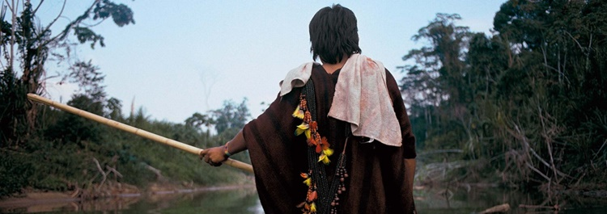

Cinema

Especial Al Pacino (02/07/24 — 04/08/24)
Este evento es una celebración del talento y la carrera de un artista cuyo trabajo ha cautivado al público durante décadas. Al Pacino, conocido por sus papeles en películas icónicas como la trilogía “El Padrino”, “Perfume de Mujer”, “Tarde de perros” y “Scarface”, será el protagonista de esta retrospectiva cinematográfica. Los billetes custan R$10 reais y R$5 la media entrada, y pueden ser comprados en el sitio web oficial de CCBB. El horario actual es de dos películas por día, de martes a domingo.
Música

Super Jazz festival (12/06/24 — 24/07/24)
El Super Jazz Festival llega para celebrar el Jazz y la música afrobrasileña, con un encuentro de grandes artistas, bandas y DJs, reuniendo estilos y generaciones con diferentes invitados, que rotan cada semana en los céspedes del CCBB Brasilia. Es una buena actividad para disfrutar del aire libre y del atardecer. Con presentaciones que comienza a las 17:00 horas y finaliza a las 19:45 horas, es un evento breve y relajante.
Exposiciones
Hiromi Nagakura al Amazonas con Ailton Krenak (11/06/24 — 18/08/24)
La exposición presenta 120 fotografías del galardonado fotógrafo japonés Hiromi Nagakura, tomadas en viajes con Krenak, principalmente en territorio amazónico, entre 1993 y 1998. Aparte de contar con muestras de objetos de las personas visitadas y objetos de manipulación, recursos de accesibilidad también se encuentran a disposición del público, como audiodescripciones, pizarras táctiles y videotecas. Según Krenak, la exposición trae algunas bellas imágenes de viajes a pueblos y comunidades de la Amazonía brasileña. “Momentos de intimidad y alegría entre “amigos para siempre” inspiraron esta exposición fotográfica mediada por encuentros con algunas de las personas queridas que nos acogieron en sus cocinas y canoas, en sus playas fluviales y en sus pueblos: Ashaninka, Xavante, Krikati, Gavião, Yawanawá, Huni Kuin e comunidades ribereñas del río Juruá y la región de lavrado en Roraima”, destaca el curador. Una exposición interesante para aquellos interesados en la cultura norteña de Brasil, especialmente los pueblos indígenas.